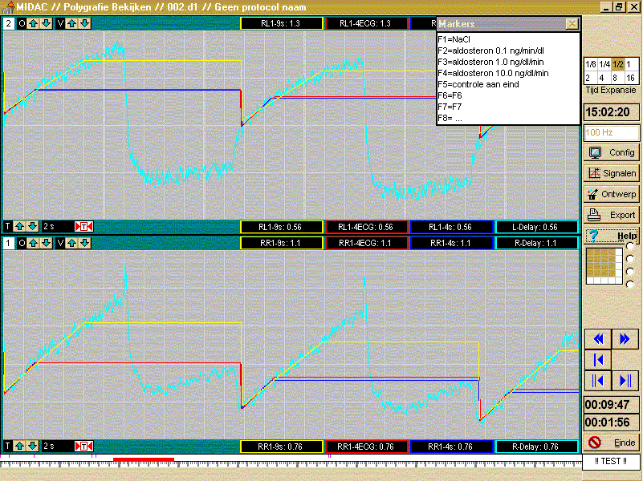

RF 2, Onset Systolische Bloeddruk
|
De figuur toont een automatische detectie en analyse van het plethysmograaf signaal (lichtblauw). De analyse (berekening van de helling vlak na het aanbrengen van de occlusie) wordt hier nog simultaan berekend volgens diverse algoritmen (rood=eerste 4 hartslagen, donkerblauw=eerste 4 seconden, geel=eerste 9 seconden), teneinde het beste algoritme te kunnen selecteren.
Inmiddels is een aantal opnamen zowel met de klassieke handmethode alsook met de diverse automatische rekenalgoritmen berekend. Hieruit blijkt dat het meten over volle hartslagen iets beter werkt dan het meten over een vaste tijdsperiode. Voor het automatisch meten worden 2 perioden gebruikt (3 en 8 hartslagen), daar waar de 2 methoden substantieel afwijken, dient de curve getoetst en de helling zonodig op het scherm gecorrigeerd te worden, in de overige gevallen is de export uitdraai zoals hieronder vermeld volkomen betrouwbaar.

De berekende bloedflows als exportbestand:
© Instrumentele Dienst. Bijgewerkt op 8-12-1999.